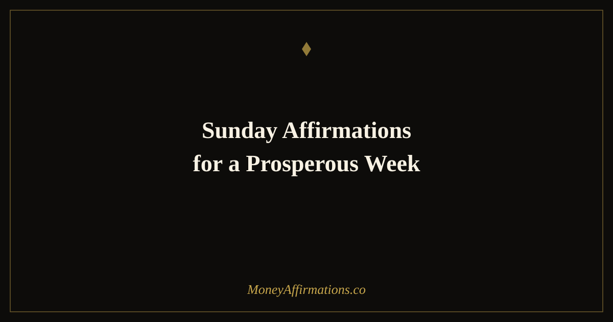

50 Sunday Affirmations for a Prosperous Week Ahead

How you spend Sunday shapes how you enter Monday — and Monday shapes the entire week. Yet most people drift through Sunday in a haze of half-rest and low-grade dread, never actively choosing the mindset they want to carry into the days ahead. The result is a week that starts on the back foot before a single email has been opened.
Sunday is not just a rest day. It is a reset ceremony — a unique psychological threshold where the old week dissolves and the new one has not yet taken shape. This collection of 50 affirmations is designed to work across the arc of a full Sunday, from the first gentle release of the morning to the calm confidence of the evening. Use them to let go of last week's weight, set clear intentions, open yourself to receiving, and arrive at Monday feeling prepared, grounded, and genuinely ready for prosperity.
What are Sunday affirmations for prosperity?
Sunday prosperity affirmations are intentional statements read or spoken on Sundays to close the previous week with gratitude, clear any lingering stress or disappointment, and prime the mind for abundance in the coming week. They differ from daily affirmations in that they honour the rhythm of the week — the natural pause before a new beginning — rather than simply repeating general positive statements.
The power of Sunday affirmations lies in timing. Research on temporal landmarks — the psychological fresh starts that come with new weeks, months, and years — shows that people are significantly more receptive to change and intention-setting at these turning points. Sunday sits at the most common weekly landmark, making it an ideal moment to release what is not working and consciously choose the mental and emotional state you want to bring into the week. Prosperity follows clarity, and Sunday is when clarity is most available.
50 Sunday affirmations for a prosperous week
Sunday is not just a rest day — it is a reset ceremony. These affirmations are designed to be used across the full day: morning release, midday intention-setting, and evening preparation. Use all five groups or pick the one that fits your Sunday mood.
Sunday morning — release the week behind you
- I release last week with gratitude for everything it taught me.
- Any mistakes from last week have already done their job of teaching me — I let them go now.
- I clear the slate and begin again, fresh and open.
- I am grateful for last week's income, effort, and progress — no matter how small.
- I release any financial worry that carried over from the week and choose peace instead.
- Last week's challenges do not define this week's possibilities.
- I have permission to fully rest today so I can fully show up tomorrow.
- I let go of the comparison, the hustle guilt, and the sense of not doing enough.
- My energy is replenishing right now, and I deserve this restoration.
- Each Sunday is a small miracle — a chance to begin again with everything I have learned.
Setting your weekly intentions
- This week I intend to create value, earn abundantly, and receive with gratitude.
- I set a clear financial intention for this week and I trust it to guide me.
- I know what matters most this week and I protect my energy accordingly.
- My time this week is an investment — I spend it on things that build my future.
- I set the tone for this week right now, and the tone I choose is prosperity.
- I welcome focus, clarity, and purposeful action as my companions this week.
- I decide in advance that this week will move me meaningfully forward.
- I approach this week with both ambition and equanimity — striving and peaceful at once.
- My intentions for this week are clear and compelling, and I trust myself to honour them.
- I plant the seeds of this week's prosperity right now, on Sunday, in my own mind.
Opening to receive this week
- I am open to unexpected income and opportunities finding their way to me this week.
- Abundance is already moving in my direction — I make myself ready to receive it.
- I release resistance and create space for prosperity to enter my life this week.
- I expect good things to happen this week and I am right.
- New connections, collaborations, and opportunities are on their way to me.
- I am a clear and open channel for wealth, health, and joy this week.
- The universe conspires in my favour when I am clear about what I want and why.
- I welcome this week's gifts — both the ones I can see coming and the ones that will surprise me.
- Financial opportunities are abundant and I have the eyes to see them clearly.
- This week I receive everything that is aligned with my growth and my goals.
Sunday evening — prepare your mindset for Monday
- I am calm and prepared for everything tomorrow will bring.
- Monday is not something to dread — it is the first opportunity of a fresh week.
- I have everything I need to show up powerfully tomorrow.
- I face Monday with the quiet confidence of someone who has done the mindset work.
- Tonight I rest fully, knowing tomorrow I will bring my best energy to my best work.
- I close this Sunday knowing I have invested in my mindset and my momentum.
- I am not starting from zero tomorrow — I am building on everything that came before.
- Monday is a door I am excited to open, not a wall I am dreading to hit.
- My mind and body are rested, ready, and resourced for the week ahead.
- I go to sleep tonight with genuine peace — next week is already being taken care of.
Blessing the week ahead
- I bless this coming week with my full attention, my full effort, and my full gratitude.
- I send prosperity forward into each day of the week and it is already there waiting for me.
- May this week bring exactly what I need to grow into the version of myself I am becoming.
- I give thanks in advance for the abundance, the lessons, and the connections this week holds.
- This week flows with ease because I have cleared the way with my intentions and my openness.
- I move through this coming week with grace, with purpose, and with deep financial confidence.
- Every day of this week I am becoming wealthier — in money, in knowledge, in peace of mind.
- I welcome this week as a gift, and I intend to use it fully and joyfully.
- Prosperity is not waiting for some future version of me — it is arriving for the me who begins Monday morning.
- I am grateful for this week before it has even begun, because I already know it is filled with possibility.
How to use these affirmations
The five groups in this collection are designed to be spread across the day rather than read all at once. Morning release (group one) is most effective within the first thirty minutes of waking, before the day's tasks crowd in. Intention-setting (group two) works well mid-morning, when you feel settled enough to think clearly about what you want from the week. Opening to receive (group three) fits naturally into a midday quiet moment — after lunch, during a walk, or with a cup of tea.
Sunday evening affirmations (group four) are best read between 7pm and 9pm, when the transition from rest to preparation is most natural. The blessing group (group five) is designed as the last thing you read before sleep — a closing ceremony that carries the week's intentions into your overnight mind.
If you only have time for one group, let the day's feel guide your choice. Feeling unresolved about last week? Start with group one. Feeling unfocused about the week ahead? Go to group two. Feeling Monday dread creeping in? Group four is your anchor. Pair this Sunday practice with Monday affirmations for money to carry the energy you built on Sunday directly into the working week.
The psychology of Sunday: how weekly rituals prime your brain for prosperity
Why does Sunday carry such psychological weight? The answer lies in a combination of implementation intentions research, the fresh start effect, and the brain's deep need for predictability and ritual.
Psychologist Peter Gollwitzer's work on implementation intentions — the "when X happens I will do Y" structure — shows that people who form specific plans at transition points follow through on goals at dramatically higher rates than those who simply hold vague aspirations. Sunday is a natural transition point: a recurring temporal landmark that invites this kind of planning. When you use Sunday affirmations to form clear intentions for the week ("this week I will create value, earn abundantly, and receive with gratitude"), you are not just repeating nice words — you are encoding a psychological script that the brain will reference throughout the coming days.
Hengchen Dai, Katherine Milkman, and Jason Riis's landmark research on the fresh start effect demonstrates that people are significantly more motivated at temporal landmarks — the start of a new week, month, or year — because these moments create a psychological separation from past failures and a clean slate for new behaviour. Sunday holds this quality every single week, making it a high-leverage moment for prosperity practices.
Research on workplace performance also shows that employees who spend time on Sunday structuring their intentions for the week demonstrate better focus, higher reported satisfaction, and more consistent follow-through on their most important work. The mechanism is simple: ritual creates predictability, predictability reduces cognitive load, and reduced cognitive load frees up the mental resources needed for creative, productive, wealth-generating action.
Tips to make them work faster
- Create a physical ritual: Light a candle, make a specific tea, or sit in a specific chair for Sunday affirmations. The physical context becomes a trigger that puts the brain into receptive, reflective mode more quickly each week.
- Write your top intention: After reading group two, take sixty seconds to write one specific financial or career intention for the week in a journal. Writing crystallises the intention more powerfully than reading alone.
- Release first, receive second: Never skip group one to get to the "good" parts. The release of last week's energy is what creates the space that prosperity can fill — it is not optional.
- Read group five aloud: The blessing affirmations in group five are meant to be spoken, not just read silently. The act of voicing your intentions for the week adds weight and ceremony that silent reading does not.
- Stack the habit: Attach Sunday affirmations to something you already do every Sunday — your morning coffee, a weekly walk, or Sunday dinner preparation. Habit stacking removes the need for willpower and makes the practice automatic within a few weeks.
Frequently asked questions
What is the best time on Sunday to do these affirmations?
Each group is designed for a specific Sunday moment, so the timing matters. Morning release affirmations (group one) work best within the first hour of waking, ideally before checking your phone. Intention-setting affirmations (group two) are ideal mid-morning with coffee or tea. The receptivity group (group three) can be read at any quiet midday moment. Sunday evening preparation affirmations (group four) are most powerful between 7pm and 9pm — not so late that you are exhausted, but late enough that you are genuinely winding down. The blessing group (group five) works beautifully as the final thing you read before sleep.
How is Sunday different from other days for affirmation practice?
Sunday sits at a unique psychological threshold — it is both the end of one week and the beginning of the next. Research on the fresh start effect shows that people are more motivated to pursue goals at temporal landmarks, and the Sunday-Monday transition is one of the strongest weekly landmarks we have. This makes Sunday an unusually high-leverage time for mindset work: the brain is primed to let go of what did not work last week and set intentions for what it wants next. Affirmations done on Sunday carry the benefit of that natural openness.
Can Sunday affirmations help with Monday anxiety?
Yes, and this is one of the most practical benefits of a Sunday evening affirmation ritual. The anticipatory anxiety that many people feel on Sunday evenings — sometimes called 'Sunday scaries' — comes from the mind running worst-case scenarios about the week ahead. Sunday evening affirmations interrupt that pattern by giving the mind something specific and positive to rehearse instead. Over several weeks of consistent practice, the brain begins to associate Sunday evenings with calm preparation rather than dread.
Sunday is the foundation the whole week stands on. For more affirmations to build a prosperous daily practice across every day of the week, explore our full prosperity affirmations collection — 60 affirmations across four themes designed to sustain a wealth mindset through every season of life.